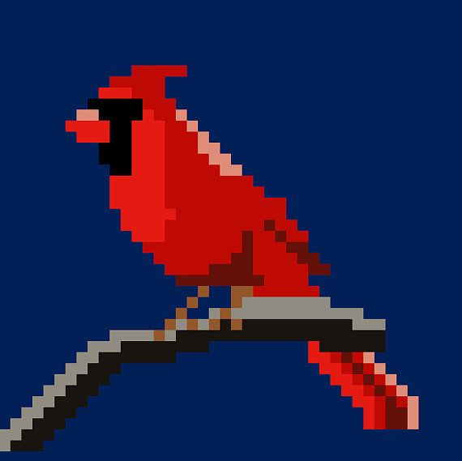
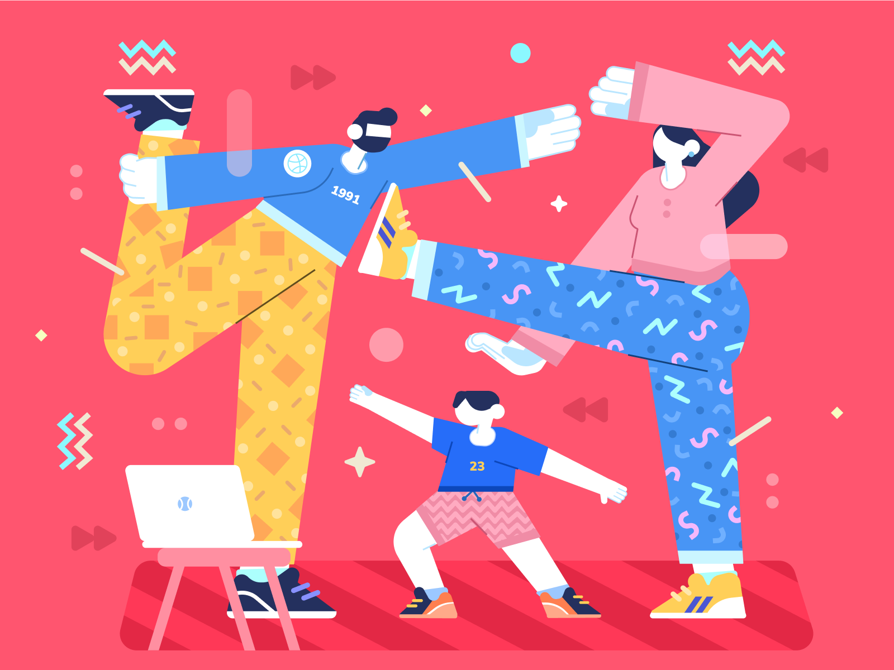

Readlock
If the mascots and confetti stopped working on you, you're in the right place.
"TikTok for smart peop-"
Shut the f**k up.

8-bit birds. Because we are s3xy, and why the f**k not?

Corporate Memphis. The look every other app is leaving us with. We are not.
The current shape of microlearning is some f**cking corporate Memphis illustration, a smiling mascot, and a weekly streak that turns a missed day into guilt. The whole loop is a slot machine wearing a smile.
People once had a clay tablet and a sharp stick. From those, they worked out arithmetic, written law, the calendar, and the first stories that outlived their authors. The tools were almost nothing, and the attention was everything.
Real learning is slow on purpose. It asks the reader to sit with one idea long enough that the idea has somewhere to live. Readlock is built for that, and nothing else.
Each lesson is built on something a careful reader would underline. We cut the throat-clearing and keep the part that actually changes how a subject is understood.
Every package ends with a small check: a question, a true or false, a moment to reflect. Not a test. A second pass through memory before the app closes.
Skip a day, or skip a month. The lessons wait. There are no streaks to defend, and nothing to feel bad about when life gets in the way.
We said no to investors trying to make our app into another crappy f**kfest. Every pitch deck asked for the same three things: a brighter mascot, a longer streak, and a louder daily push to drag the user back into the app.
That is the part of microlearning we are leaving behind. The only deal we would take is the one that lets the app stay calm, slow, and worth a careful reader's time.
F**k you, motherf**kers.
We are doing this the cool f**cking way.
Streaks, mascots, or confetti.
Just learning.
We are hiring slowly, the way the rest of the app was built. If you write, design, or code with care, and the current state of edtech makes you tired, we want to hear from you.
Email work@readlock.app with one paragraph about what bothers you about the apps you use today, and one thing you have made that you are still proud of.